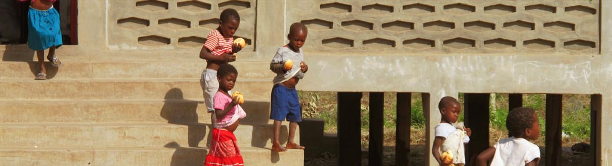
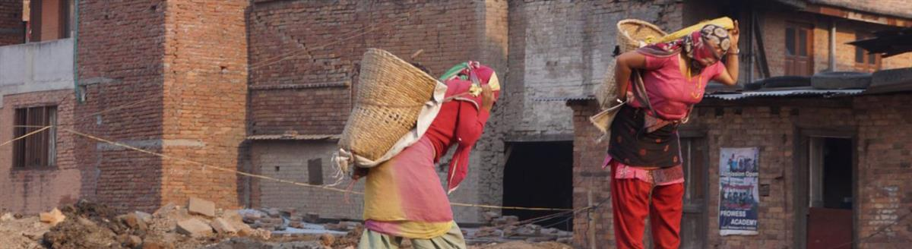
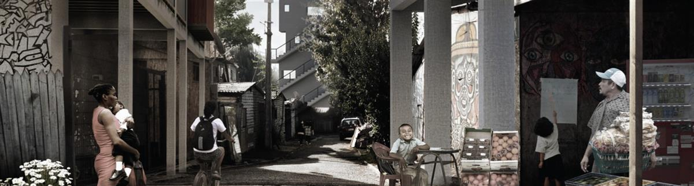
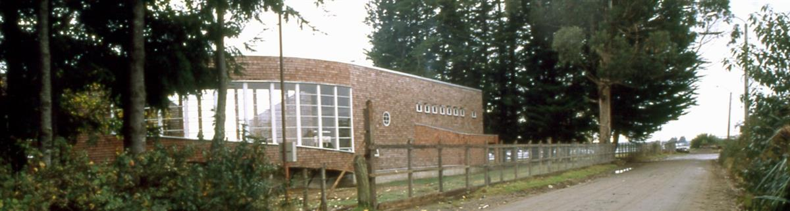
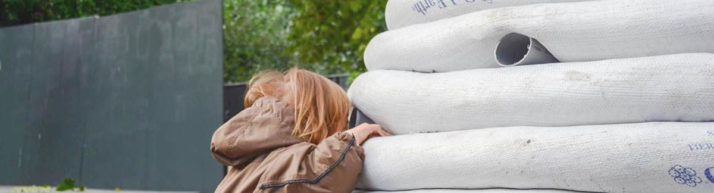

100 Classrooms for Refugee Children
The building is 25 sqm classroom in a dome shape built to host Syrian and Jordanian children in Za’atari village, located just outside of the Za’atari refugee camp, 10 km from the Syrian border.

Maniquenique Survival platform and School. Self-built for women of the community.
Architecture is a Human Right We work and build for socially vulnerable communities around the globe that face inequality, humanitarian crisis and violation of their human rights.
Our EA-HR Projects are the core projects of the company. We want sustainable architecture to be available for everyone.
We work and build in accordance with the Universal Declaration of Human Rights (U.N. Paris 1948) and U.N.’s Sustainable Development Goals. We call these projects: EA-HR projects because they are the core of our nonprofit organisation.

Reconstruction of two rural primary schools affected by Nepal earthquake in April 2015. EAHR creates a pilot project in Kalapani and Gogandanda to attend 300 children. Nepal, 2015We offer our specialised knowledge and experience to NGOs working with UN’s sustainability goals and to municipalities and governments working with integration. With our extensive expertise on emergency architecture and development we can improve your NGO projects. We also offer our architectural expertise for governments and municipalities that are responsible for refugee placements and shelters.

Social Housing. New period. To respect collective spaces in informal settlements is a way to respect and learn from the social structure Wrzeszcz, Lotz, Lobos, Santiago, Chile, 2014If you want to add a social and humanitarian dimension to your new house then EA-HR is the architectural agency you have been looking for.
(E)quality is an innovative concept that joins Architectural Quality with Social Equality.
We build for private clients who support our concept and believe in a more balanced planet.
Our professional fee is similar to other architectural offices, the difference is that we destine our income to build for communities around the world in need of improving their life conditions.
With (E)quality our clients are thus an active part of creating a more balanced planet through the professional fee. And thus the clients can have intense human experiences through their own architectural projects.

Maullin Elderly Home. Community self-built this place to live together with the poor elders who remain alone in the countrysideChile
We have various educational offers within the field of emergency architecture.
International Masters For professionals we have established an international master program
Workshops We offer workshops of various kinds. Our most popular workshop is called 5X5 and is designed for university students
Public School Programs For public schools we offer a day of fun activities and learning about emergency shelters

Sandbag Schools Prototype, Copenhagen, Denmark, 14 October, 2016SOURCE: EA-HR